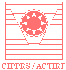

|
Foreword
Workshop proceedings
Registration Information
Original call for
papers
Organizer and Program Chair:
Dmitry
O. Gorodnichy,
NRC-CNRC, Canada
Fax: 1 (613) 952-0215
Tel: 1 (613) 998-5298
Email: fpiv04@visioninterface.net
Program Committee:
Bernhard
Fröba,
Fraunhofer-Institut, Germany
Laurent Itti,
U. of Southern California, USA
Takeo
Kanade,
CMU, USA
Josef Kittler,
University of Surrey, UK
Ernst Kussul,
U. Nacional Autonoma, Mexico
Stan Z. Li,
Microsoft Research, China
Michael J. Lyons,
ATR, Japan
Marc
Parizeau,
U. Laval, Canada
Maximilian
Riesenhuber,
Georgetown U., USA
Gerhard Roth,
NRC-CNRC, Canada
Chris
Solomon,
U. of Kent at Canterbury, UK
Matthew Turk,
UCSB, USA
Lijun Yin,
SUNY at Binghamton, USA
Sponsors:


***
Online proceedings from
other
related workshops/conferences:
Biologically Motivated Computer Vision
Workshop Proceedings: 2002,
2000
Vision Interface
Conference Proceedings: 2002, 2001
Early Cognitive
Vision Workshop
(Scotland, May 2004) Proceedings
|
Aims and Layout
Face processing is an area of research dedicated to the extraction and
manipulation of information about human faces. It deals with such problems as face
detection, tracking, recognition, coding, etc. as well as their applications.
Video is becoming ubiquitous and very affordable, and there is growing demand
on vision-based human-oriented applications, ranging from security and
industry for disabled to computer-human interaction and video annotation.
Therefore, more and more research effort is being put on face processing in
video, which is very different from face processing in still imaginary in
terms of the nature of data processed.
On one hand, because of real-time, bandwidth and environmental constraints,
video images are of rather modest resolution and quality, as compared to photo-images.
On the other hand, such a seeming deficiency of video is compensated by the
abundance of images due to the dynamic nature of video. Video processing and
understanding also has many parallels with biological vision, which provides
additional insights and solutions to the problem.
Therefore, it is important to develop approaches other than those developed
for still imagery which would make use of the advantages of video for face processing.
With this goal in mind, this workshop is aimed at providing a forum for
scientists from different backgrounds: biological vision, computer vision,
pattern recognition, machine learning, computer-human interaction, etc. - to
share their experiences and discuss the problems, new approaches and
applications of Face Processing in Video.
The workshop will consist of one day of oral presentations and a invited talk.
Invited talk: "Biological Models of Vision and Attention for
Face Detection in Natural Scenes" (by Dr. Laurent
Itti, U. of Southern California)
Workshop proceedings The papers
accepted for the workshop are published in the CVPR'04 CD-ROM Proceedings and archived into the IEEE Computer Society's and the
IEEE Xplore
digital libraries.
The suggested research areas are listed below (from theory-driven to
application-driven), but other topics dealing with the face in video scenario
are welcome.
neurobiological and neuro-computational approaches to visual perception
and recognition
synergy between biological and computer vision
face segmentation and detection in video
face tracking and multiple faces tracking
face memorization, classification recognition from video
face biometrics and face modeling, 3d face models
facial features for tracking and recognition
face representation, canonical face models, face in video databases
face synthesis, mimicking and animation
facial expression recognition and classification, and representation
fusing different modalities of video information (motion, colour, intensity)
performance evaluation for face in video problems
face detection/tracking/recognition in multi-camera setups including stereo
face detection/tracking/recognition in panoramic video
combining video and audio for speaker face detection/tracking/recognition
face-based multi-media, games, and computer-human interaction
perceptual face-controlled interfaces
face processing for video-conferencing
face processing for avatars and computer-generated communication programs
face processing for immersive and collaborative environments
face processing for industry for disabled
face processing for augmented and virtualized reality
face processing for security and surveillance
face processing for encoding and annotating video
Submission procedure
Content. Any paper analyzing video for the presence of information
about faces is welcomed for submission. However , the preference will be given
to those papers which clearly indicate in the abstract a) what is a
challenging problem the paper addresses and b) what the paper contributions
are. Application-oriented papers are as much welcome as theoretical papers.
Given the exploratory nature of the workshop, the submission of papers
describing a new face in video problem or a system is particularly encouraged.
Reviewing Process. Reviewing is blind circular. By submitting a paper, each author agrees to review at least
3 other submissions. This procedure has produced quality, useful reviews in
previous CVPR workshops. As reviewers, authors must comply with the
reviewing schedule below. In addition, each paper will be reviewed by the
program committee. Given the exploratory nature of the workshop, reviews
will emphasize the novelty of the ideas and clarity of presentation.
Registration and attendance.
Participation in the workshop without submitting a paper is
welcomed. - Workshop is open to all CVPR
2004 attendees.
In order to register for the workshop, you have to register
for the CVPR
2004!
Here is the procedure - follow this
link.
|